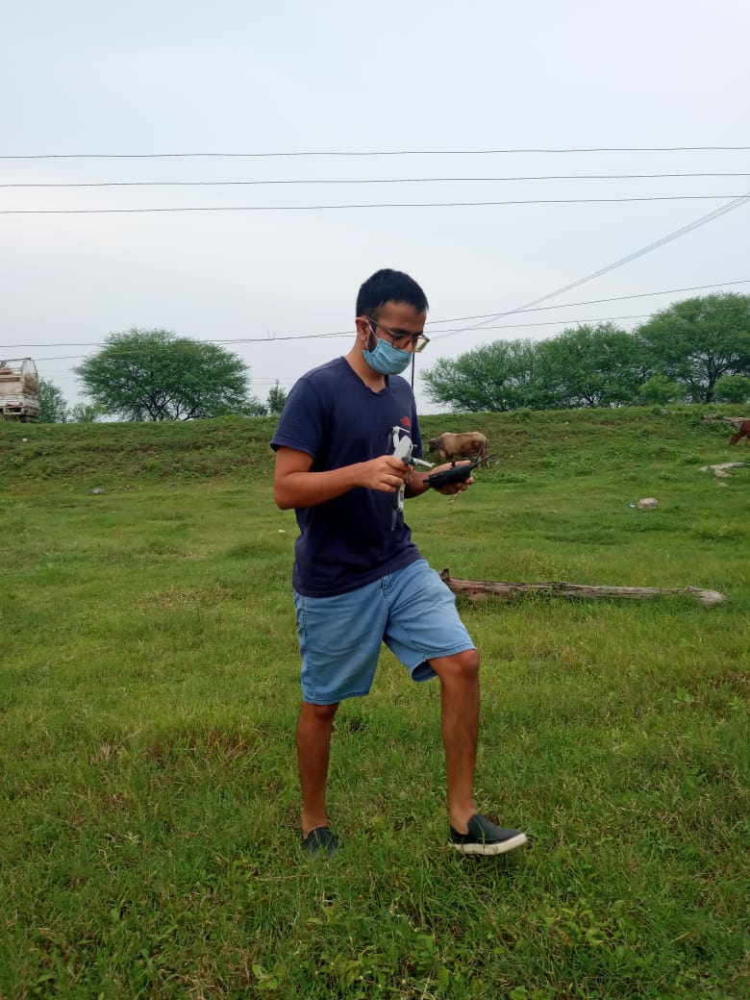

A family, a centuries-old craft, and a story that took much longer to find than I expected.
In 2021, I pitched Business Insider a story about a family in Goa keeping the tradition of making cashew feni alive.
The difficult part was finding them. After a long search, I finally found the family and spent two days filming the process, the people and the landscape around it.
The film
Watch on YouTube ↗ ▶
▶
Finding the
family.
The story began with a pitch, but the pitch wasn't the hard part. Finding a family still making feni in the traditional way took persistence.
Once I found them, the shoot became a close look at the people, land and process behind the drink — from the cashew trees to the craft itself.
The photographs from the shoot are a reminder of what these stories often require: getting out there, looking carefully and waiting until the right people let you in.


A small Goa story found a very large audience.
The film became one of Business Insider's biggest-performing videos. Publicly available channel data currently lists it at more than 41 million views on YouTube.
The story also became the beginning of a longer connection with Business Insider and later led to other documentary work.
The story I almost couldn't find in Goa.
I wrote about the search for this story, the two-day shoot, and what happened after the film went live in Field Notes #03.
Read Field Notes #03 ↗